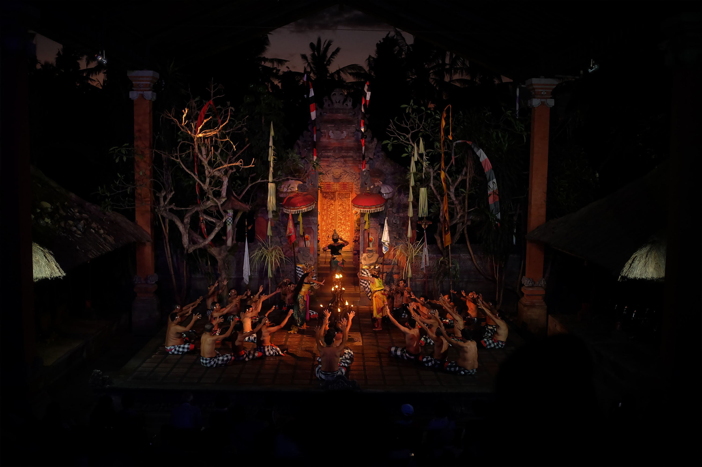
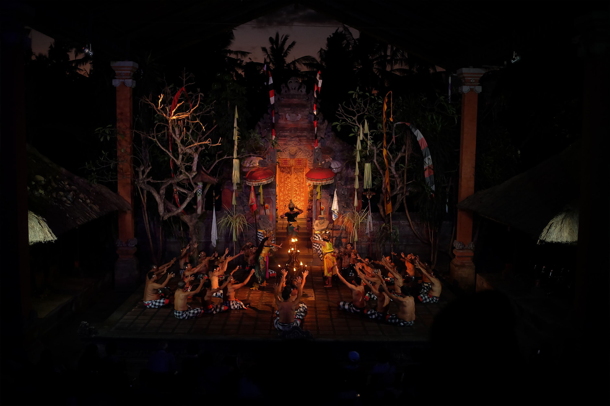

Wonderful island
Bali merupakan destinasi wisata paling populer di Indonesia. Bali memiliki resor terbaik di dunia. Bali juga dikenal dengan sebutan Pulau Dewata, Pulau Seribu Pura, atau Pulau Surga. Karena di samping pantai-pantai Bali yang memang sudah sangat terkenal keindahannya, Bali juga memiliki keindahan alam yang luar biasa
Read more


 
